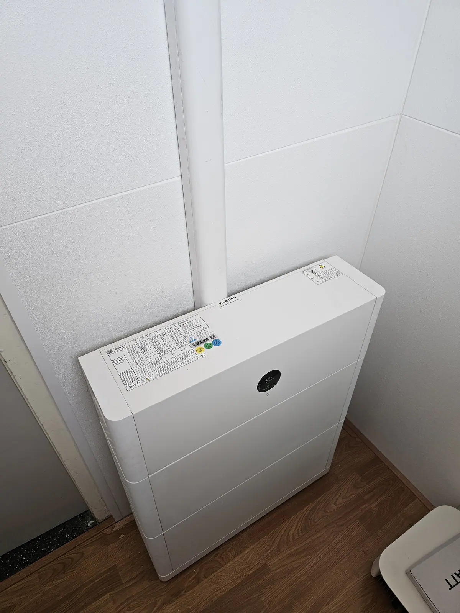
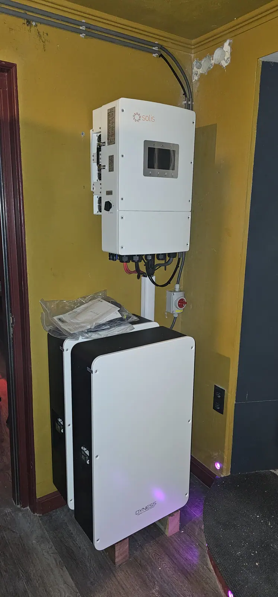
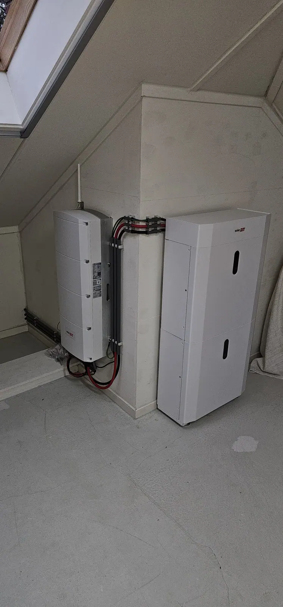
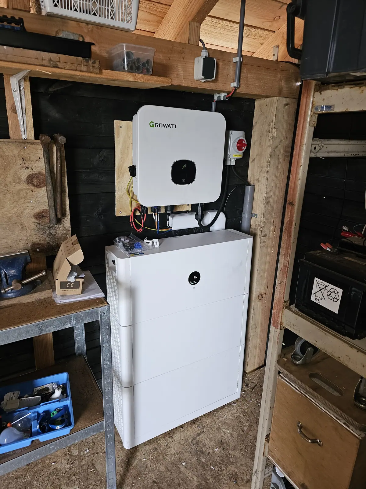
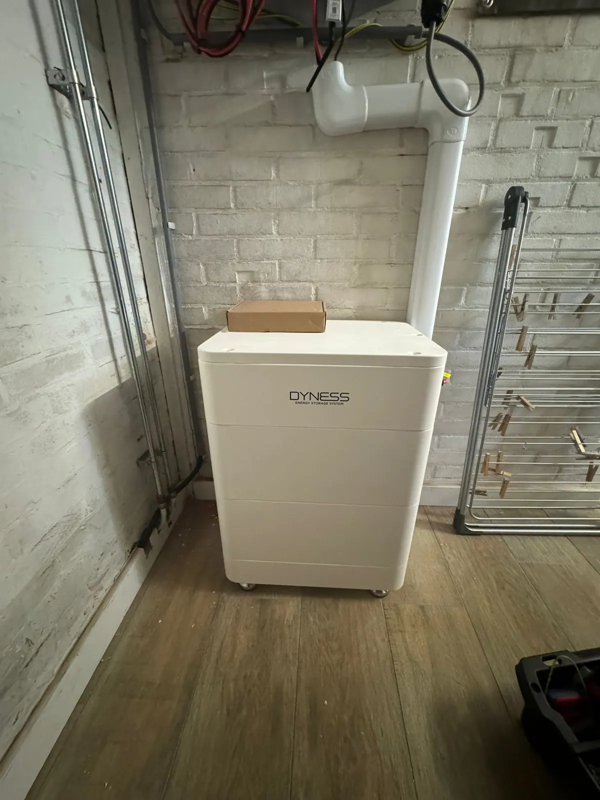
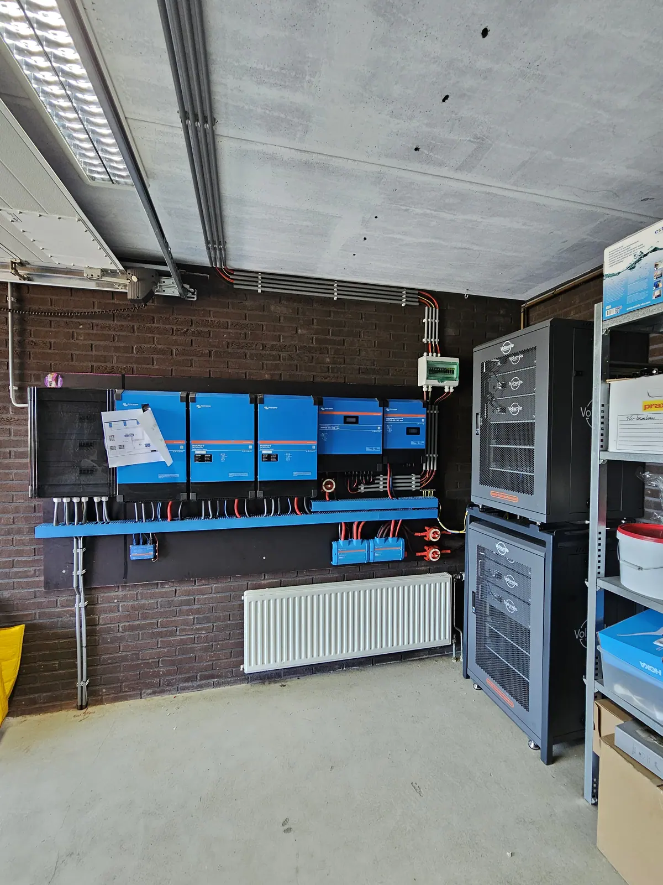

Thuisbatterij installeren in Emmen
Een thuisbatterij bij je zonnepanelen? Oosterveld verzorgt advies, plaatsing en aansluiting op je meterkast in Emmen en omgeving.
Nieuw: stuur foto's of een korte video van je meterkast mee met je aanvraag. Dan krijg je vaak al een richtprijs zonder dat we eerst langs hoeven te komen.
Thuisbatterij laten installeren
Met een thuisbatterij gebruik je meer van je eigen zonnestroom. Oosterveld verzorgt advies, plaatsing en de aansluiting op je meterkast in Emmen en omgeving.
- Advies over capaciteit en doel
- Plaatsing en aansluiting
- Aanpassingen aan meterkast en groepenkast
- Combineren met nieuwe of bestaande zonnepanelen

Waarom een thuisbatterij?
Meer eigen stroom gebruiken
Je slaat overdag opgewekte stroom op en gebruikt die ’s avonds.
Lagere energiekosten
Minder stroom inkopen betekent een lagere rekening.
Noodstroom
Bij sommige systemen kun je stroom blijven gebruiken bij een storing. Wij vertellen wat kan.
Na de salderingsregeling
Vanaf 1 januari 2027 stopt de salderingsregeling. Een batterij kan dan helpen om meer zelf te gebruiken.
Zo werken we
Aanvraag
Je geeft capaciteit en doel door, of vraagt om advies.
Richtprijs
Je krijgt snel een richtprijs.
Opname
We bekijken meterkast en plek voor de batterij.
Plaatsing
We plaatsen en sluiten de batterij aan.
Oplevering
We leggen de werking uit en laten alles netjes achter.
Thuisbatterijen die we hebben geplaatst
Verschillende systemen op verschillende plekken: in huis, onder het dak of in de schuur.






Wat klanten zeggen
Reviews van klanten van Oosterveld.
“Oosterveld Installaties levert uitstekend vakmanschap. Jasper is deskundig en werkt zeer secuur, met oog voor detail. Alles wordt netjes en professioneel afgewerkt en hij denkt goed mee over de beste oplossingen.”
“Een betrouwbare, deskundige en klantgerichte vakman, dat is Jasper! Na veel wisselende ervaringen, eindelijk een vakman gevonden die doet wat hij zegt en zegt wat hij doet.”
“Super snelle reactie op mijn aanvraag op Werkspot, snel een afspraak, keurig werk en wederom snel een factuur. Absoluut een aanrader! Dank je wel Jasper voor je werk.”
“Uitstekend uitgevoerd, netjes achtergelaten, vriendelijk contact.”
“Netjes gewerkt, goede adviezen, ze mogen vaker komen.”
Veelgestelde vragen
Wat is een thuisbatterij?
Een thuisbatterij slaat stroom op die je zonnepanelen overdag opwekken, zodat je die later zelf kunt gebruiken.
Welke capaciteit heb ik nodig?
Dat hangt af van je verbruik en je zonnepanelen. In ons formulier kun je een capaciteit kiezen of ‘advies gewenst’. Wij adviseren op basis van jouw situatie.
Moet de meterkast worden aangepast?
Vaak zijn aanpassingen in de meterkast nodig. We bekijken dat bij de opname en nemen het mee in de prijs.
Heb ik zonnepanelen nodig voor een thuisbatterij?
Een thuisbatterij is vooral zinvol in combinatie met zonnepanelen. We bespreken wat bij jouw situatie past.
Hoe vraag ik een richtprijs of offerte aan?
Via het formulier op deze site, per WhatsApp of telefonisch. Je krijgt eerst een richtprijs. Daarna komen we bij je langs voor de opname en ontvang je een definitieve prijs.
Klaar voor je richtprijs?
Vul je wensen in en ontvang snel een richtprijs. Daarna komen we langs voor een vaste prijs.